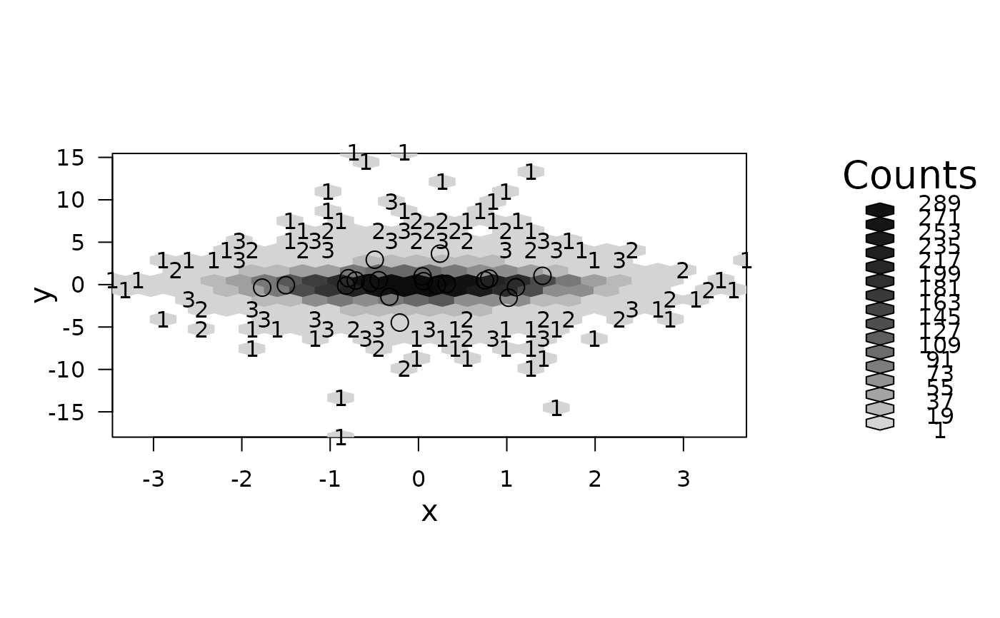

hexVP-class.RdHexagon Viewports are “value-added” grid viewports (see
viewport) where the extra slots contain scaling and
“embedding” information. A hexViewport is created my taking the
available area in the cuurent viewport on the graphics device and
maximizing the amount of area with a fied aspect ratio. The default
when the shape parameter is 1, is a 1:1 aspect ratio in terms of the
size of the viewport, not the scale of the x and y axis. The plotting
area is centered within the existing margins and the maximum size
determined. Extra area is then allocated to the margins. This viewport
is replicated twice, once with clipping set to "on" and once with
clipping "off". This feature can be used for toggling clipping on and
off while editing the plot.
Objects are typically created by calls to hexViewport()
or by low level calls of the form new("hexVP", ...).
hexVp.off:Object of class "viewport" with
clipping set to off, see viewport.
hexVp.on:Object of class "viewport", with the same
dimensions and parameters as hexVp.off, but with
clipping set to on, see viewport.
hp.name:The name of the viewport for searching a vptree
mar:unit vector of four margins
(typically in "lines").
fig:unit vector of two figure sizes
(typically in "npc").
plt:unit vector of two figure sizes
(typically in "npc").
shape:The shape parameter from the plotted
hexbin object.
xscale:numeric of length two specifying x-range.
yscale:numeric of length two specifying y-range.
These are methods accessing the slots of corresponding name.
signature(hvp = "hexVP"): ...
signature(hvp = "hexVP"): ...
signature(hvp = "hexVP"): ...
signature(hvp = "hexVP"): ...
signature(hvp = "hexVP"): ...
The constructor function hexViewport.
hexbin, and its S4 plotting method,
gplot.hexbin.
library("grid")
example(hexViewport, echo=FALSE)

## continued:
str(P$plot.vp)
#> Formal class 'hexVP' [package "hexbin"] with 9 slots
#> ..@ hexVp.on :List of 33
#> .. ..$ x : 'simpleUnit' num 4.1lines
#> .. .. ..- attr(*, "unit")= int 3
#> .. ..$ y : 'simpleUnit' num 6.6lines
#> .. .. ..- attr(*, "unit")= int 3
#> .. ..$ width : 'simpleUnit' num 0.634npc
#> .. .. ..- attr(*, "unit")= int 0
#> .. ..$ height :Classes 'unit', 'unit_v2' hidden list of 1
#> .. .. ..$ :List of 3
#> .. .. .. ..$ : num 1
#> .. .. .. ..$ :List of 2
#> .. .. .. .. ..$ :Classes 'unit', 'unit_v2' hidden list of 1
#> .. .. .. .. .. ..$ :List of 3
#> .. .. .. .. .. .. ..$ : num 1
#> .. .. .. .. .. .. ..$ : NULL
#> .. .. .. .. .. .. ..$ : int 0
#> .. .. .. .. ..$ :Classes 'unit', 'unit_v2' hidden list of 1
#> .. .. .. .. .. ..$ :List of 3
#> .. .. .. .. .. .. ..$ : num -12.2
#> .. .. .. .. .. .. ..$ : NULL
#> .. .. .. .. .. .. ..$ : int 3
#> .. .. .. .. ..- attr(*, "class")= chr [1:2] "unit" "unit_v2"
#> .. .. .. ..$ : int 201
#> .. ..$ justification : num [1:2] 0 0
#> .. ..$ gp : list()
#> .. .. ..- attr(*, "class")= chr "gpar"
#> .. ..$ clip : logi TRUE
#> .. ..$ xscale : num [1:2] -3.46 3.71
#> .. ..$ yscale : num [1:2] -18 15.5
#> .. ..$ angle : num 0
#> .. ..$ layout : NULL
#> .. ..$ layout.pos.row: NULL
#> .. ..$ layout.pos.col: NULL
#> .. ..$ valid.just : num [1:2] 0 0
#> .. ..$ valid.pos.row : NULL
#> .. ..$ valid.pos.col : NULL
#> .. ..$ name : chr "zzsex.on"
#> .. ..$ parentgpar : NULL
#> .. ..$ gpar : NULL
#> .. ..$ trans : NULL
#> .. ..$ widths : NULL
#> .. ..$ heights : NULL
#> .. ..$ width.cm : NULL
#> .. ..$ height.cm : NULL
#> .. ..$ rotation : NULL
#> .. ..$ cliprect : NULL
#> .. ..$ parent : NULL
#> .. ..$ children : NULL
#> .. ..$ devwidth : NULL
#> .. ..$ devheight : NULL
#> .. ..$ clippath : NULL
#> .. ..$ mask : logi TRUE
#> .. ..$ resolvedmask : NULL
#> .. ..- attr(*, "class")= chr "viewport"
#> ..@ hexVp.off:List of 33
#> .. ..$ x : 'simpleUnit' num 4.1lines
#> .. .. ..- attr(*, "unit")= int 3
#> .. ..$ y : 'simpleUnit' num 6.6lines
#> .. .. ..- attr(*, "unit")= int 3
#> .. ..$ width : 'simpleUnit' num 0.634npc
#> .. .. ..- attr(*, "unit")= int 0
#> .. ..$ height :Classes 'unit', 'unit_v2' hidden list of 1
#> .. .. ..$ :List of 3
#> .. .. .. ..$ : num 1
#> .. .. .. ..$ :List of 2
#> .. .. .. .. ..$ :Classes 'unit', 'unit_v2' hidden list of 1
#> .. .. .. .. .. ..$ :List of 3
#> .. .. .. .. .. .. ..$ : num 1
#> .. .. .. .. .. .. ..$ : NULL
#> .. .. .. .. .. .. ..$ : int 0
#> .. .. .. .. ..$ :Classes 'unit', 'unit_v2' hidden list of 1
#> .. .. .. .. .. ..$ :List of 3
#> .. .. .. .. .. .. ..$ : num -12.2
#> .. .. .. .. .. .. ..$ : NULL
#> .. .. .. .. .. .. ..$ : int 3
#> .. .. .. .. ..- attr(*, "class")= chr [1:2] "unit" "unit_v2"
#> .. .. .. ..$ : int 201
#> .. ..$ justification : num [1:2] 0 0
#> .. ..$ gp : list()
#> .. .. ..- attr(*, "class")= chr "gpar"
#> .. ..$ clip : logi NA
#> .. ..$ xscale : num [1:2] -3.46 3.71
#> .. ..$ yscale : num [1:2] -18 15.5
#> .. ..$ angle : num 0
#> .. ..$ layout : NULL
#> .. ..$ layout.pos.row: NULL
#> .. ..$ layout.pos.col: NULL
#> .. ..$ valid.just : num [1:2] 0 0
#> .. ..$ valid.pos.row : NULL
#> .. ..$ valid.pos.col : NULL
#> .. ..$ name : chr "zzsex.off"
#> .. ..$ parentgpar : NULL
#> .. ..$ gpar : NULL
#> .. ..$ trans : NULL
#> .. ..$ widths : NULL
#> .. ..$ heights : NULL
#> .. ..$ width.cm : NULL
#> .. ..$ height.cm : NULL
#> .. ..$ rotation : NULL
#> .. ..$ cliprect : NULL
#> .. ..$ parent : NULL
#> .. ..$ children : NULL
#> .. ..$ devwidth : NULL
#> .. ..$ devheight : NULL
#> .. ..$ clippath : NULL
#> .. ..$ mask : logi TRUE
#> .. ..$ resolvedmask : NULL
#> .. ..- attr(*, "class")= chr "viewport"
#> ..@ mar : 'simpleUnit' num [1:4] 6.6lines 4.1lines 5.6lines 2.1lines
#> .. ..- attr(*, "unit")= int 3
#> ..@ fig : 'simpleUnit' num [1:2] 0.82npc 1npc
#> .. ..- attr(*, "unit")= int 0
#> ..@ plt : 'simpleUnit' num [1:2] 0.634npc 0.634npc
#> .. ..- attr(*, "unit")= int 0
#> ..@ xscale : num [1:2] -3.46 3.71
#> ..@ yscale : num [1:2] -18 15.5
#> ..@ shape : num 1
#> ..@ hp.name : chr(0)